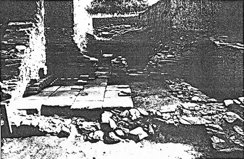
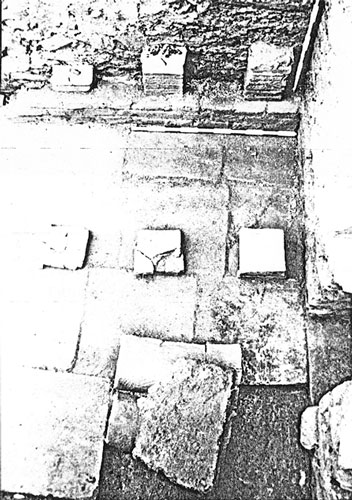
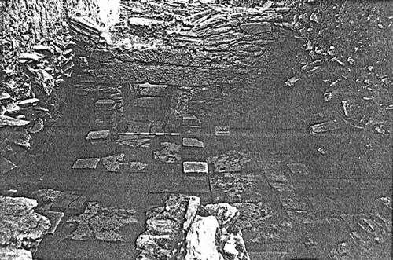
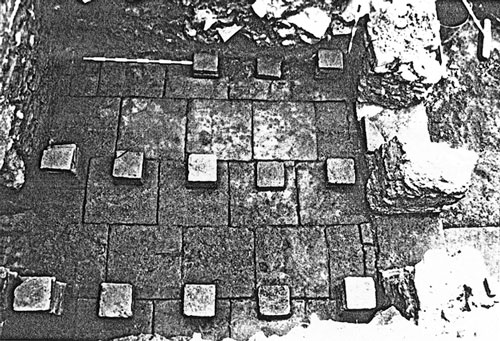
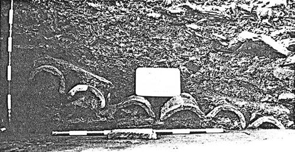
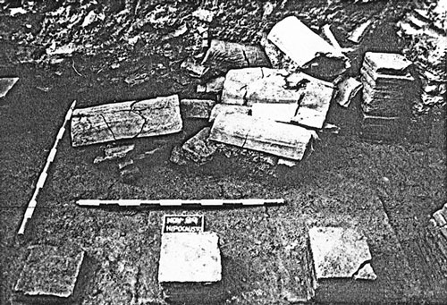
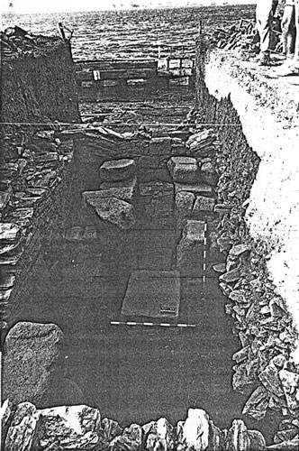
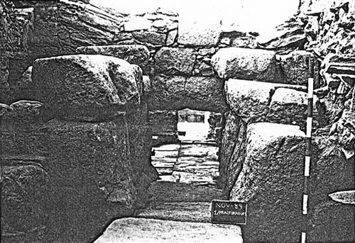
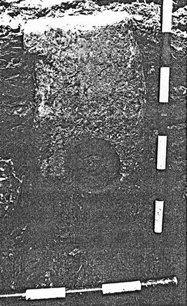

Conjunto del hypocaustum
Las estructuras más meridionales de la zona intermareal del Sector B, así como todas aquellas exhumadas en la Cata 1 podrían agruparse, directa o indirectamente, en relación con la existencia del bien conocido sistema de calentamiento romano denominado hypocausis o hypocaustum, dato que nos permite distinguir de manera obvia ésta parte media de la nave oeste del edificio como zona habitacional y, hasta cierto punto, como "noble". La excavación, aunque parcial, permitió distinguir claramente la cámara de calentamiento, donde se ubica el praefurnium y dos cámaras de calor "clásicas" intercomunicadas.
La cámara de calentamiento, tiene una forma regular y está parcialmente excavada en la roca base ( ). La excavación sólo premitió definirla por tres de sus lados, pero el muro que la define por el Este no debe estar muy alejado del prefil; tendría por lo tanto 5,1 X 2,8 mts., abarcando un área total de 14,2 m2, un tamaño considerable para éste tipo de estancia, en relación directa con el gran tamaño presentado por el praefurnium, que ocupa toda la mitad norte de la estancia. Su utilidad estrictamente funcional y servil (en ésta cámara sólo entrarían las personas encargadas de encender y mantener vivo el fuego necesarío para el calentamiento) explica perfectamente la exsistencia en la esquina sudoeste de un acceso directo al exterior, así como el hecho de que su suelo séa simplemente de roca excavada. La puerta, de poco más de un metro de ancho, aprovecha un escalón excavado en la roca y debió estar flanqueada por el norte por un gran sillar granítico a modo de jamba, piedra que apareció caída en el interior a sú lado. Éste vano comunica la estancia con una zona abierta exterior donde sólo apareció la roca base, más o menos rebajada en sentido ascendente hacia el suroeste; en ésta área fueron localizados, alineados y a distancias regulares, tres agujeros de poste excavados en el suelo (de unos 25 cms. de diámetro por unos 35 de profundidad), probablemente pertenecientes a un cobertizo destinado a guardar el combustible del horno, así como un considerable nivel de escombrera de cenizas y material diverso procedente de la limpieza y extracción de los restos producidos en el horno.
). La excavación sólo premitió definirla por tres de sus lados, pero el muro que la define por el Este no debe estar muy alejado del prefil; tendría por lo tanto 5,1 X 2,8 mts., abarcando un área total de 14,2 m2, un tamaño considerable para éste tipo de estancia, en relación directa con el gran tamaño presentado por el praefurnium, que ocupa toda la mitad norte de la estancia. Su utilidad estrictamente funcional y servil (en ésta cámara sólo entrarían las personas encargadas de encender y mantener vivo el fuego necesarío para el calentamiento) explica perfectamente la exsistencia en la esquina sudoeste de un acceso directo al exterior, así como el hecho de que su suelo séa simplemente de roca excavada. La puerta, de poco más de un metro de ancho, aprovecha un escalón excavado en la roca y debió estar flanqueada por el norte por un gran sillar granítico a modo de jamba, piedra que apareció caída en el interior a sú lado. Éste vano comunica la estancia con una zona abierta exterior donde sólo apareció la roca base, más o menos rebajada en sentido ascendente hacia el suroeste; en ésta área fueron localizados, alineados y a distancias regulares, tres agujeros de poste excavados en el suelo (de unos 25 cms. de diámetro por unos 35 de profundidad), probablemente pertenecientes a un cobertizo destinado a guardar el combustible del horno, así como un considerable nivel de escombrera de cenizas y material diverso procedente de la limpieza y extracción de los restos producidos en el horno.
El praefurnium, perteneciente al tipo III de Degbomont, está construido integramente, tanto el suelo como los alzados, en grandes bloques de granito aparejados en seco.() Sus dimensiones son considerables: 3,45 mts. de largo (incluyendo la solera y el canal bajo el muro), 0,65 mts. de ancho medio y 1,20 mts. de alto (0,70 mts. en el interior del canal bajo el muro). Éste canal, adintelado en granito, presenta la particularidad constructiva de que no soporta sobre sí misma todo el peso del muro, dada la presencia de un arco de descarga de medio punto que se abre por encima del mismo (aún son visibles los arranques de éste arco, hecho de lajas irregulares de esquisto), desviando así lateralmente los empujes verticales que produciría el peso del propio muro. El praefurnium, por su parte, también debió estar cubierto por dinteles(por desgracia no conservados), aunque su alzado también denota la utilización de la técnica de "falsa bóveda" con aproximación sucesiva hacia el interior de las hiladas sucesivas de sillares graníticos. Todo el suelo estaba cubierto de un lecho continuo de cenizas y carbones de unos 10 cms. de espesor medio, lecho que se extendía por las vecinas cámaras de calor. Un dato significativo a apuntar es que, curiosamente, las grandes losas graníticas que conforman el suelo del praefurnium están dispuestas de modo ligeramente descendiente en la dirección de las cámaras de calor, contradiciendo así las conocidas indicaciones de Vitruvio sobre el sistema de nivelación de los hipocaustos. La presencia de una piedra granítica de unos 15 cms. de diametro (), empotrada en el muro oeste de la cámara a la altura de la solera del praefurnium asociado a un pequeño agujero excavado en la roca -que bien podría ser un gozne- nos hace pensar en la existencia de un sistema de cierre de la zona del horno. También interpretamos como un elemento de infraestructura el pequeño agujero cuadrado (21 cms. de lado) que cruza el muro oeste de la estancia, posiblemente de aireación o de evacuación de cenizas hacia el exterior.
Las estancias 6 y 7 constituyen dos cámaras de calor (lo que normalmente se conoce por hipocausto). Ambas son de identica forma, dimensiones (4,8 X 2,8 mts) y estructura, comunicadas entre sí por dos canales posiblemente adintelados.() Las cámaras abarcan un área de 13,4 m2 cada una y están construidas, excepto los muros, integramente en ladrillo. Los del suelo del hipocausto son del tipo bipedalis (en concreto de 56 X 56 cms.) y están asentados sobre un lecho de arcilla amarilla pisada; las hiladas están dispuestas de manera alterna, completándose los espacios sobrantes pegados a los muros con fragmentos de ladrillos de menor tamaño. Las pilae, o columnas de pequeño tamaño, hechas en ladrillos bessales (20 X 20 cms.), están disùestas en cinco hiladas de cinco columnas cada una, con una separación media entre columnas de unos 30 cms. y entre hiladas de 80 cms (). La pila mejor conservada (justo a la salida del praefurnium) tiene 9 ladrillos y supera escasamente el medio metro de altura (). Los pilares de la cámara 6 presentan la particularidad de tener por base un ladrillo de entalle reutilizado, y que la hilada este va adosada al muro sobre un zócalo de ladrillo en el que se asientan tres pilae de medio ladrillo bessal cada una ().


Estas dos estancias constituyen dos cámaras de calor, el hipocausto propiamente dicho. Comparten tamaño y estructura y están comunicadas por dos canales posiblemente adintelados.
Esta estancia se ha identificado como el praefurnium, o espacio en el que se mantenía vivo el fuego que alimentaba el sistema de calefacción. Está construido integramente, tanto el suelo como los alzados, en bloques de granito aparejados en seco.
Estancia exterior de servicio para el praefurnium. Probablemente se guardase aqui el combustible necesario para el funcionamiento del sistema de calefacción.

Vista del conjunto desde el norte de las salas calentadas por el hipocausto (cata1) con el canal del praefurnium al fondo.

Detalle de la esquina sureste de la cámara número seis. Al fondo pilae adosadas al muro sobre un zócalo de ladrillos; en primer término detalle del piso del nivel superior de opus signinum sobre unos imbrices.

Detalle del hipocausto de la cámara número siete, con la salida del praefurnium al fondo. A la derecha, escasamente descubierto el muro arrasado.

Vista superior del hipocausto de la cámara número siete y, a la derecha, dos canales de comunicación con la número seis.

Detalle de un gran fragmento de suspensura caído del nivel de derrumbe de la cámara número seis. Obsérvense las hiladas de grandes ímbrices perfectamente alineadas bajo el piso de opus signinum.

Otro detalle de grandes ímbrices de suspensura caídos sobre las columnas de la cámara número siete.

Conjunto de la cámara de calentamiento presidida por el magnífico praefurnium de grandes sillares graníticos.

Detalle del praefurnium, obsérvese el acercamiento progresivo de los muros a modo de falsa bóveda.

Detalle del sillar granítico con rebaje circular central empotrado en el muro de la cámara de calentamiento.